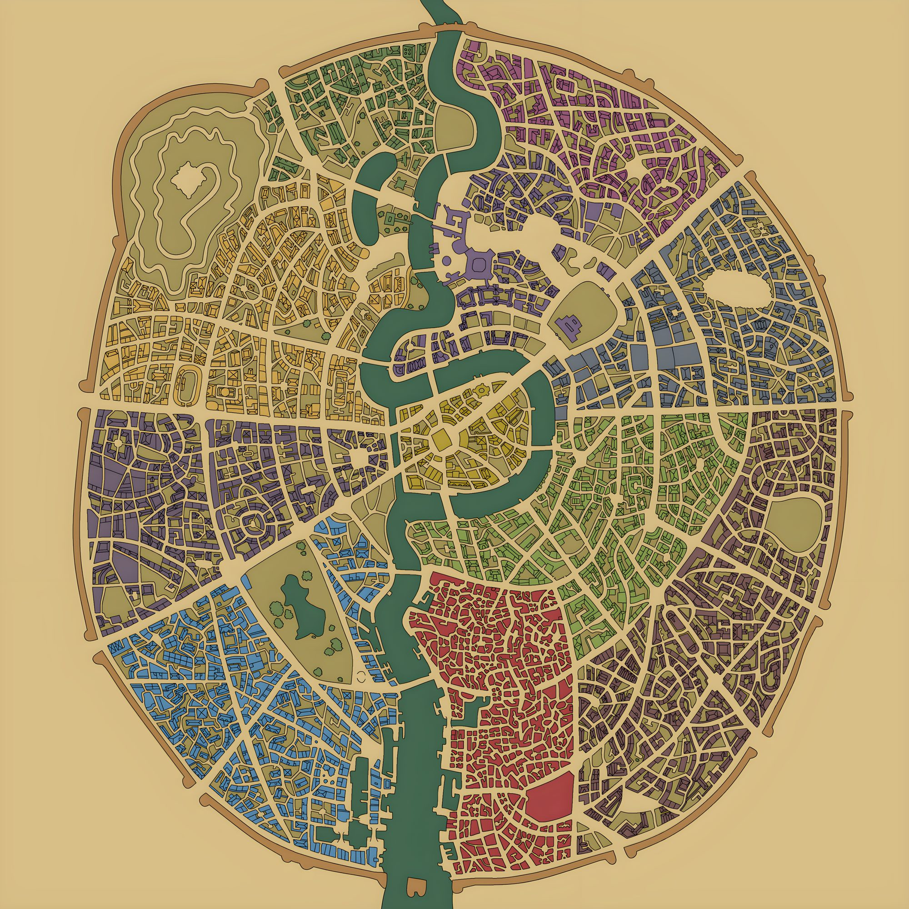

Dos ciudades en una
Ankh es la orilla rica y respetable; Morpork, la pobre y peligrosa. Entre ambas corre el río Ankh, tan espeso que se puede caminar sobre él. Juntas suman cerca de un millón de habitantes de todas las especies.
Un millón de habitantes, un río sobre el que se puede caminar y un tirano que hace que todo funcione. Pulsa un barrio o un edificio.

Ankh es la orilla rica y respetable; Morpork, la pobre y peligrosa. Entre ambas corre el río Ankh, tan espeso que se puede caminar sobre él. Juntas suman cerca de un millón de habitantes de todas las especies.
La gobierna Lord Vetinari, el Patricio. Su principio es simple: la ciudad tiene que funcionar. Lo consigue haciendo que todos los grupos poderosos necesiten que siga funcionando. Un hombre, un voto: el hombre es Vetinari y él tiene el voto.
Casi todo está organizado en gremios, incluso el crimen. Los ladrones roban con licencia y dentro de una cuota; los asesinos son una escuela de élite con código de honor; hay gremios de mendigos, bufones, alquimistas, abogados, músicos y «costureras».
De tres hombres desacreditados a un cuerpo de policía moderno y multiespecie, con enanos, trolls, una mujer lobo, un gólem, un zombi y un vampiro. Su comandante, Sam Vimes, es la conciencia de la ciudad.
De ciudad medieval de fantasía a metrópoli con periódico, telégrafo de semáforos, correo, papel moneda, fútbol y ferrocarril. Ankh-Morpork vive su propia revolución industrial libro a libro.
Su modelo es sobre todo Londres, en distintas épocas, de la Edad Media a la Inglaterra victoriana. Muchos nombres de calles y lugares son juegos de palabras con el Londres real, como Hide Park.